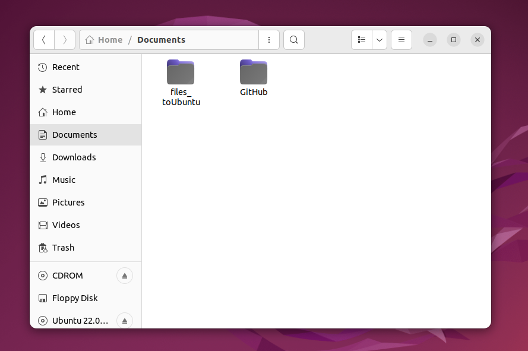

目次
問題点とやりたいこと
このブログの開発環境は Ubuntu の仮想マシン上にブログのリポジトリを置いて、Windows 上の VSCode で Ubuntu と Remote SSH で接続して記事を書いている状態です。
ちょっと説明が下手すぎますね…すみません。
詳しくは以下のブログにて開発環境構築手順を記載しています。
-
[Windows向け]GitHub Pagesを使用したサイトの開発環境構築① ～VM(Ubuntu)とDockerを添えて～
-
[Windows向け]GitHub Pagesを使用したサイトの開発環境構築② ～GitHub Actions使ってみた～
基本的に Windows の PC で作業を行っていて、Ubuntu (VM) には SSH 接続するだけなのですが、作業を進めるうちやりたいことが出てきました。
「ブログに Windows PC でキャプチャした画像を貼りたい…！！」
困りましたわ。
ブログのソースコードを Ubuntu 上に置いているものですから、画像も Ubuntu 上で引用できる状態でないとだめですの。
Ubuntu 上でキャプチャ撮ればいいやんみたいな無粋なことは言わないでくださる？？
Windows で作業するというスタイルはこんなことでは崩せませんことよ！
絶対に Windows の作業だけで Ubuntu に持っていってやりますわ👸
結論いきます。
Windows から Ubuntu (VM) にフォルダ転送
-
Windows 上の任意のフォルダに SSH 接続先に送りたいファイルを入れる。
（このフォルダをコピーして送ることになります。）
-
Windows 上で ターミナルを開く。
（私の場合は VSCode で新しいウィンドウを開き、bash のターミナルを開きました。）
-
以下のコマンドを実行。
$ tar c [Windows側のフォルダパス] | ssh [SSH接続先のIPアドレス] -l [Ubuntuのユーザ名] 'tar x -C [Ubuntu側の送信先フォルダパス]'
例えば設定項目 値 Windows 側のフォルダパス Documents/files_toUbuntu SSH接続先のIPアドレス 192.168.XXX.XXX Ubuntuのユーザ名 Ubuntu01 Ubuntu側の送信先フォルダパス Documents
という条件であればこんな感じ。$ tar c Documents/files_toUbuntu/ | ssh 192.168.XXX.XXX -l ubuntu01 'tar x -C ~/Documents/'実行すると、Ubuntu 側の Documents フォルダ内に files_toUbuntu フォルダが置かれます。

tar コマンドの解説
ここで、使用したコマンドの解説を少し行います。
-
tar c: ファイルのアーカイブを作成 -
tar x: 指定の場所（ -C で指定）にファイルを展開
→ これらを SSH を通して実行しています
シングルクォーテーション'' でくくることによって、Windows 側のディレクトリにアクセスしてしまうことを回避できます。
'' の中身を丸ごと SSH に持っていく感じです。
まとめ
SSH 接続元から接続先にフォルダを送るには
$ tar c [SSH接続元のフォルダパス] | ssh [SSH接続先のIPアドレス] -l [SSH接続先のユーザ名] 'tar x -C [SSH接続先のフォルダパス]'
が便利だよ、というお話でした。
これで毎回 Windows 側で Google Drive に画像を上げて、Ubuntu 側で受け取る作業がなくなりました。
もっと色んなコマンドを勉強して、効率よく作業が行えるようになりたいです🐢
こちらのブログは初心者エンジニアが勉強の記録やアウトプットの一環として執筆しております。
内容に誤りがある可能性が多大にありますのでご了承ください。